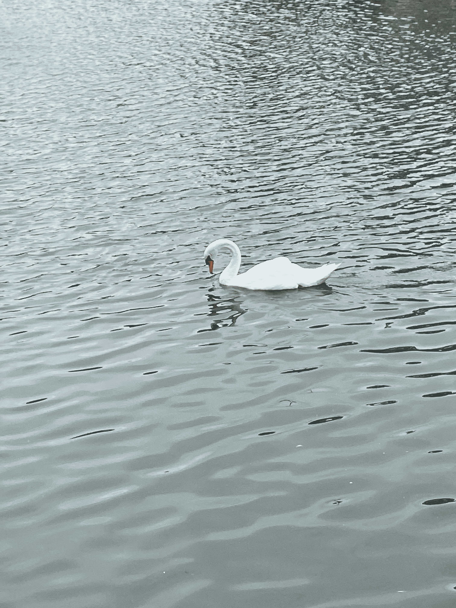
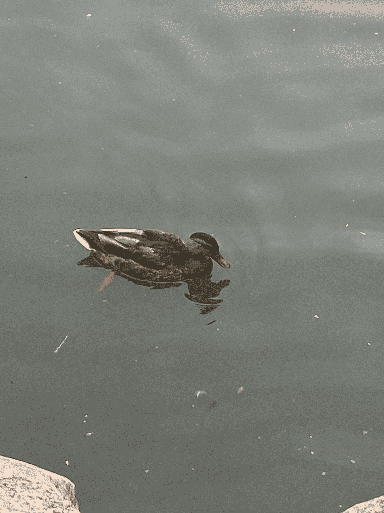
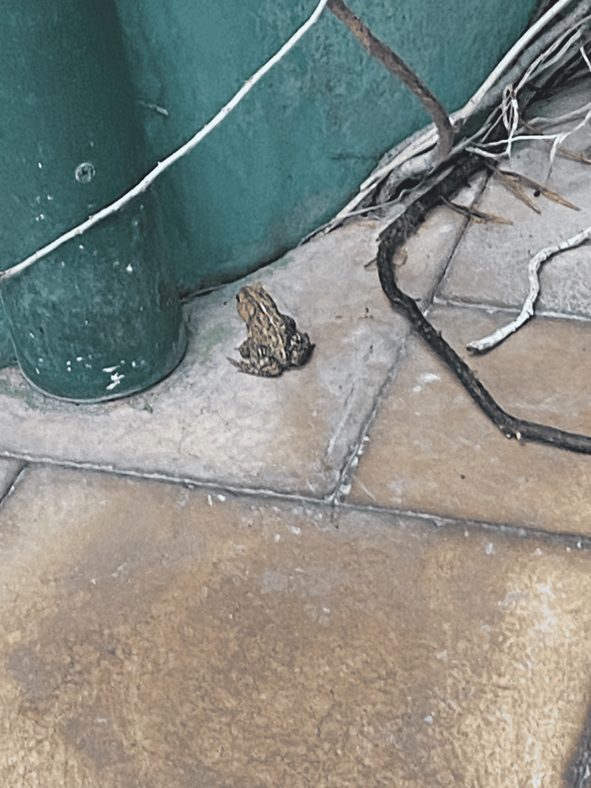

Swans
Swans are found outdoors at the Eclipse Lagoon though there's not that many to look at.

Ducks
Ducks are quite common outdoors at the Eclipse Lagoon, they come in groups and have a variety of colors.

Toads
Toads are found inside the Tropical Exhibition Area, they're very small but can blend in at times with the environment inside.

Koi Fish
Koi Fish are found inside the Tropical Exhibition Area inside the water and inside the Eclipse Lagoon. There's a lot of them in groups and have a good variety of colors.
Bees
Bees are found naturally outdoors, they're trying to pollinate the flowers that the outdoor areas have to offer.
Butterflies
Butterflies are found naturally outdoors, they come in many shapes and colors.
Geese
Geese are found naturally outdoors, they come in groups and tend to hangout near the lagoon areas or outside the area of this place.